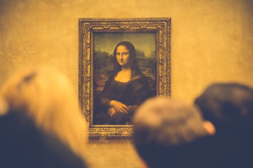

The Maya Classic Period from AD 800-AD 950 ended in such a confusing manner as to become one of the world's
greatest mysteries. In a period of 150 years, nearly all the major Maya cities were abandoned and
archeologists can’t account for what happened to 95% of the 20 million Maya living at the time. The events
leading up to that point and the society afterward paints a confusing picture that have caused many to
speculate for decades.
What would have caused the Maya to suddenly abandon their way of living and their great cities? Many
scenarios have been put forth to try to figure out what caused such a drastic change. The speculations range
anywhere from climate change to alien abduction.

Revolution
One of the early accepted theories was brought forth by archeologist Eric Thompson. He believed that the farmers
and regular folk of the cities incited a rebellion against the royalty. For decades, this was the leading theory.
That is until it was found that there was no evidence of such a revolt and it would have had to occur
simultaneously in many competing states, spread across such a large region. There is also no account for those
that died, and no new society rose from the old as civil wars usually induce.
However, one possibility that still makes this theory plausible is if the situation was dire enough that the
people lost faith in the royalty’s ability to communicate with the gods or showed themselves incapable of being
protectors. 90% of the population were farmers and could have rebelled against the elites and simply abandoned the
city afterwards. Without evidence, it is still unlikely, but possible.
The lack of a celebration is very telling to archeologists. The Maya were not known to forget. But some believe
that
the long calendar was truly a countdown that ended in the year AD 830. When a person asks a modern Maya what
happened to the people anciently, they reply that they went home. The theory is that they prepared and went home
to
the Pleiades constellation by mass alien abduction.
Maya Mysteries: What Happened?
Over-Population
Archeologists have made discoveries that lead us to believe that the population was larger than originally
thought. Their cities were enormous and housed tens of thousands, if not more. This could have easily put a
greater strain on the ruling families during a time that was already difficult with drought and famine.
Perhaps it was no longer possible to live in the cities.
Deforestation
Coupled with the drought is deforestation. Researchers have looked into the environment surrounding the
cities and made astonishing discoveries. The Maya were chopping down trees and burning large amounts of wood
at a climbing rate. It appears that they were clearing the land for agricultural purposes and burning massive
amounts of wood to create the lime plaster for their buildings. It’s estimated that they burned 20 trees per
square meter.
What they didn’t know is that less water evaporates from its surface from cleared land, which causes there to
be fewer clouds and less rainfall. In other words, the Maya were making a bad situation worse.
Deforestation also typically decreases the amount of water in the soil, causing problems with crop
production. The soil would have been depleted of its minerals, becoming virtually useless to farmers. Again,
the Maya were hurting themselves while trying to fix the problem, though this time they made the famine worse
as well as the drought.
Deforestation
Perhaps the Maya society had only been weakened by the drought and would have survived if it hadn’t been for
foreign invasion. That is what some archeologists believe happened back then. Much as when Teotihuacan marched
on and conquered Tikal centuries before, some think a foreign power came in and initiated a war, causing the
Maya civilization to collapse.
There is fewer evidence to support this idea than a large war on this scale should have left. However, the
evidence does exist. At some cities and most notably the city of Ceibal, there are artifacts to suggest this
history took place. For example, a figure is depicted with a “non-Mayan mustache and hairstyle but who is
wearing Maya costume” and is known as Wat’ul. Glyphs are found that aren’t from the Maya, as well as a sketched
person with the mask of Ehecatl, which is not a Maya god but the god of wind from central Mexico. Some Fine
Orange pottery was also discovered, which is not native to the Maya region.